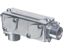
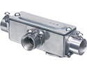
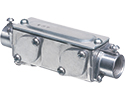
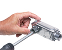
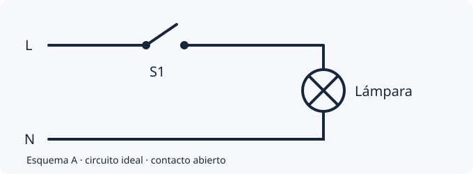
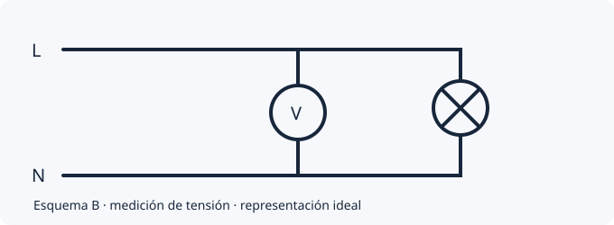
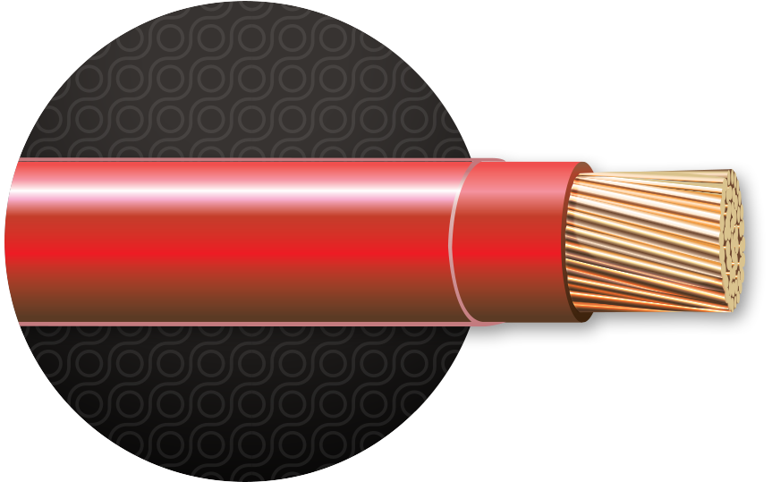

320 preguntas, incluidas 100 incorporadas al banco de 220 preguntas previas. Los documentos originales se conservan completos; los ejercicios adaptados incorporan las correcciones técnicas documentadas.
El examen de práctica tiene 50 preguntas: 10 de Ohm y potencia (20%), 8 de circuitos (16%) y 32 de otros temas (64%). Son cuotas educativas propias, no porcentajes oficiales de la Junta.
Edición didáctica: NEC 2020. No se ha confirmado la edición exigida en tu convocatoria. Las preguntas normativas señalan la referencia y las condiciones; la norma completa y sus excepciones prevalecen.
Mira la forma y la función
Materiales e identificación
Distingue cuerpos de canalización, cajas, conectores y acoplamientos. Verifica tipo, tamaño y ambiente; el parecido visual no demuestra compatibilidad. Las fotografías de Arlington muestran configuraciones del producto AnyBODY, no todas las marcas disponibles.
Practica: Reconoce las bocas de una T y de una C; explica para qué se retira la tapa.
El neutro puede transportar corriente normal. La unión eléctrica de metales y el conductor de puesta a tierra del equipo facilitan una trayectoria de falla hacia la fuente. El terreno por sí solo no es una trayectoria eficaz para despejar una falla. En el panel de distribución secundario descrito en los ejercicios, el neutro queda aislado del gabinete.
Practica: Compara electrodo, conductor de puesta a tierra del equipo y neutro.
En la escala AWG, 12 AWG es más grueso que 14 AWG. Para seleccionar un conductor también se necesitan material, aislamiento, terminales, temperatura, agrupamiento y protección. No se aumenta un interruptor automático para resolver un disparo sin investigar la causa.
Practica: Lee CU y la designación completa THHN/THWN-2; consulta la ficha y la tabla aplicable.
Se identifican fuentes, se aíslan y controlan reconexiones y se verifica la condición desenergizada con el procedimiento correspondiente. Puede persistir energía en capacitores, baterías o fuentes adicionales. La intervención requiere supervisión y entrenamiento adecuados.
Practica: Explica por qué una lámpara apagada y un detector sin contacto no bastan por sí solos.
GFCI y AFCI atienden riesgos diferentes. TR describe obturadores; no significa impermeable. En cajas, se compara volumen disponible con las asignaciones requeridas por todos los elementos que corresponda contar.
Practica: Con cuatro asignaciones proporcionadas de 2.25 in³: 4 × 2.25 = 9 in³. Es solo un subtotal, no el tamaño final de una caja.
La leyenda define símbolos. El esquema funcional muestra conectividad y no necesariamente la ruta física. El interruptor del ejemplo abre la fase; el neutro llega a la carga. El voltímetro del otro esquema se conecta entre nodos.
Practica: Dibuja el camino cerrado y localiza dónde lo interrumpe S1.
La continuidad y resistencia se prueban sin tensión/voltaje y con energía almacenada controlada. OL puede indicar circuito abierto o fuera de rango. Para medir corriente de carga con pinza se abraza un solo conductor; el conjunto ida-retorno puede cancelar la lectura.
Practica: Compara continuidad, tensión/voltaje y corriente; explica por qué no deben intercambiarse sus conexiones.
Distingue la Junta, el Colegio y la empresa eléctrica
Legislación y servicio local
La Junta autoriza y licencia. El ayudante trabaja bajo supervisión de un perito colegiado. El Colegio y la Junta tienen funciones diferentes. LUMA distingue contador, base, transformador y componentes del cliente o de la empresa; deben consultarse las responsabilidades vigentes.
Practica: Relaciona Ley 131-1969 con Colegio y Ley 115-1976 con Junta.
El panel entrega CC; el inversor convierte a CA. Las baterías almacenan energía. Un sistema conectado a la red no garantiza respaldo: depende del diseño. Abrir CA no elimina necesariamente la tensión/voltaje CC de módulos iluminados.
Practica: Distingue potencia en kW y energía en kWh; identifica red, solar, batería y generador.
Ohm: con 120 V y 20 Ω, I = V/R = 120/20 = 6 A. Usa V para voltaje.
Potencia: carga resistiva de 120 V y 2 A: P = V × I = 240 W. En un motor de CA real no basta V × I para obtener potencia activa sin el factor de potencia.
Serie: 4 Ω + 6 Ω = 10 Ω. La corriente es común; se suman las caídas de voltaje.
Paralelo: 4 Ω y 6 Ω: Rt = (4 × 6)/(4 + 6) = 2.4 Ω. El voltaje es común; se suman las corrientes de rama.
Energía: 1 kW durante 2 h = 2 kWh.
Galería de materiales

Configuración de codo · Foto: Arlington Industries

Configuración T · Foto: Arlington Industries

Configuración C · Foto: Arlington Industries

Tapa retirada para acceso · Foto: Arlington Industries
Observa las entradas y la tapa. La forma no basta para seleccionar un producto: verifica el catálogo y su clasificación.
Lectura de esquemas

Un contacto abierto impide la corriente; no prueba ausencia de tensión/voltaje.

El voltímetro compara el potencial entre dos nodos.
Fuentes para seguir estudiando
Consulta de contenido: 29 de octubre de 2026. Las fichas de fabricantes se utilizan para conceptos y características de productos; no sustituyen el código ni acreditan la edición de la convocatoria.
Los esquemas y ejercicios nuevos son didácticos propios. Las fotografías se atribuyen a Arlington. Puedes consultar cada fuente desde la respuesta del ejercicio.
En práctica, contesta sin límite de tiempo. Puedes consultar el tema y el documento original cuando existe.
En simulacro, elige de 10 a 240 minutos. Se ocultan tema y enlaces de consulta hasta entregar; el reloj continúa aunque cierres la página.
Usa Marcar para revisar y el mapa de preguntas para regresar a las pendientes.
Con Guardar y salir puedes continuar en el mismo navegador. No hay sincronización entre dispositivos.
Después de entregar, practica los errores de ese intento o los errores acumulados pendientes. Cada práctica usa hasta 50 errores; los aciertos los retiran de la lista.
Consulta tu progreso acumulado por tema. El historial registra los exámenes y las prácticas de errores por separado.
Tres niveles educativos
Básica: reconocer términos, materiales y funciones. Aplicación: usar un concepto o procedimiento en un caso concreto. Análisis: relacionar datos, diagnosticar errores o decidir ante varios factores.
El énfasis elegido prioriza ese nivel; se completa con otros para mantener los temas y las cuotas de 50 preguntas. Los niveles y tiempos no son clasificaciones oficiales de la Junta.
Menos repeticiones dentro de cada examen
Se agrupan ejercicios que evalúan el mismo procedimiento, aunque cambien los números. La selección prioriza familias distintas y solo repite una cuando es necesario para completar la cuota. Se conservan las preguntas originales.
Son ejemplos de varias marcas. La apariencia no garantiza compatibilidad, clasificación ambiental o capacidad eléctrica; consulta el marcado y la ficha.
Conductor y aislamiento

Ilustración del fabricante Cerrowire, no fotografía. El núcleo metálico conduce y las capas externas aíslan.Consultar ficha del conductor
Cómo usar el nuevo aprendizaje
Paso a paso: abre la explicación de un cálculo para ver datos, fórmula, sustitución y resultado. Hay 166 desarrollos, con 152 resultados numéricos cotejados.
Repasos espaciados: los fallos vuelven en un día; los aciertos amplían el intervalo a 3, 7, 14 y hasta 30 días. Consulta los pendientes al regresar: no se envían notificaciones.
Tu plan: tras contestar, aparecen hasta tres temas de menor porcentaje de aciertos, con enlace al repaso y una práctica de hasta 10 preguntas de cada tema.
Control de calidad: registra dudas desde la explicación y descarga los reportes para revisarlos. La validación por un perito acreditado sigue pendiente.